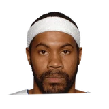

Joe Dumars:
“The day of the trade for Rasheed Wallace. I felt we had a great shot to win.”
, Public domain, via Wikimedia Commons")

Every quote from Joe Dumars about Rasheed Wallace in the archive, newest first. Each one links to its original source.
Joe Dumars:
“The day of the trade for Rasheed Wallace. I felt we had a great shot to win.”
Dave Pemberton:Dumars on hiring Rasheed:
“Bright, articulate, intelligent guy. That’s what we went out and hired him for. To bring that to the young bigs.”